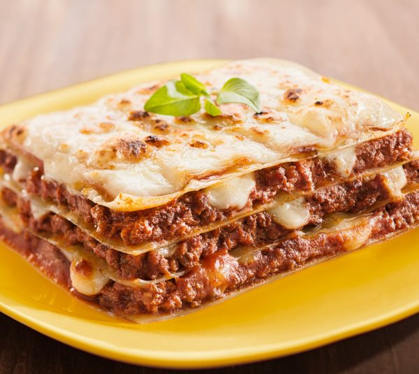

Lasagna

Description
Lasagna is a classic Italian dish made with layers of pasta, meat sauce,
and cheese. It's a comforting and flavorful meal that is perfect for
gatherings or family dinners.
Ingredients
- 1 pound ground beef
- 1 onion, chopped
- 2 cloves garlic, minced
- 1 can (14 ounces) crushed tomatoes
- 1 can (6 ounces) tomato paste
- 1 can (8 ounces) tomato sauce
- 2 teaspoons dried basil
- 2 teaspoons dried oregano
- 1/2 teaspoon salt
- 1/4 teaspoon black pepper
- 9 lasagna noodles, cooked and drained
- 3 cups shredded mozzarella cheese
- 1 1/2 cups ricotta cheese
- 1/2 cup grated Parmesan cheese
- Fresh basil leaves for garnish
Steps
-
Step 1: In a large skillet, cook the ground beef, onion, and garlic over
medium heat until the beef is browned and the onion is softened. Drain
any excess fat.
-
Step 2: Stir in the crushed tomatoes, tomato paste, tomato sauce, basil,
oregano, salt, and black pepper. Simmer for 15-20 minutes, stirring
occasionally.
-
Step 3: Preheat the oven to 375°F (190°C). In a greased 9x13-inch baking
dish, spread a layer of the meat sauce on the bottom.
-
Step 4: Place 3 lasagna noodles on top of the sauce. Spread 1/3 of the
ricotta cheese over the noodles, followed by 1/3 of the mozzarella
cheese. Repeat this layering process twice, ending with a layer of
mozzarella cheese on top.
-
Step 5: Sprinkle the grated Parmesan cheese over the lasagna. Cover the
dish with aluminum foil and bake for 25 minutes.
-
Step 6: Remove the foil and bake for an additional 15 minutes, or until
the cheese is golden and bubbly.
-
Step 7: Remove the lasagna from the oven and let it cool for a few
minutes. Garnish with fresh basil leaves before serving.